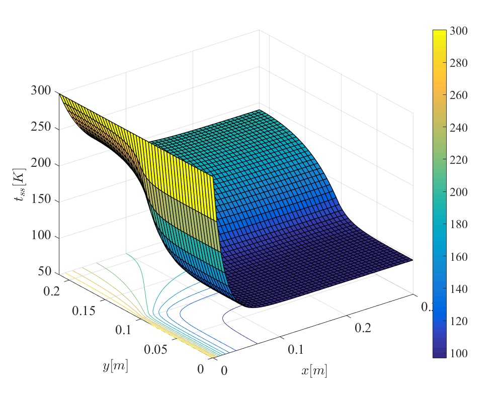
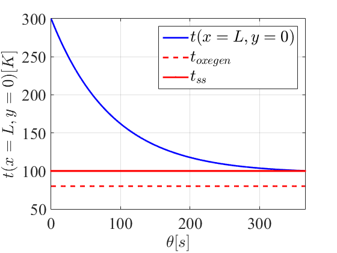

Contents
clear
clc
close all
D = 0.06;
th = 0.008;
L = 0.30;
hinv = 20;
hinl = 300;
tin = 80;
hout = 25;
tout = 300;
k = 10;
rho = 8500;
c = 420;
Davg = D+th;
a)
M = 3;
N = 3;
dx = L/(M-1);
dy = pi*Davg/(N-1);
C = Cmake(M,N,rho,c,dx,dy,th);
K = Kmake(M,N,k,dx,dy,th);
Hout = Houtmake(M,N,hout,dx,dy);
Hin = Hinmake(M,N,hinl,hinv,dx,dy);
[tinfin, tinfout] = tinfmake(M,N,tin,tout);
C
K
Hout
Hin
tinfin
tinfout
C =
Columns 1 through 7
114.3980 0 0 0 0 0 0
0 228.7959 0 0 0 0 0
0 0 114.3980 0 0 0 0
0 0 0 228.7959 0 0 0
0 0 0 0 457.5918 0 0
0 0 0 0 0 228.7959 0
0 0 0 0 0 0 114.3980
0 0 0 0 0 0 0
0 0 0 0 0 0 0
Columns 8 through 9
0 0
0 0
0 0
0 0
0 0
0 0
0 0
228.7959 0
0 114.3980
K =
Columns 1 through 7
0.0847 -0.0285 0 -0.0562 0 0 0
-0.0285 0.1693 -0.0285 0 -0.1123 0 0
0 -0.0285 0.0847 0 0 -0.0562 0
-0.0562 0 0 0.1693 -0.0570 0 -0.0562
0 -0.1123 0 -0.0570 0.3386 -0.0570 0
0 0 -0.0562 0 -0.0570 0.1693 0
0 0 0 -0.0562 0 0 0.0847
0 0 0 0 -0.1123 0 -0.0285
0 0 0 0 0 -0.0562 0
Columns 8 through 9
0 0
0 0
0 0
0 0
-0.1123 0
0 -0.0562
-0.0285 0
0.1693 -0.0285
-0.0285 0.0847
Hout =
Columns 1 through 7
0.1001 0 0 0 0 0 0
0 0.2003 0 0 0 0 0
0 0 0.1001 0 0 0 0
0 0 0 0.2003 0 0 0
0 0 0 0 0.4006 0 0
0 0 0 0 0 0.2003 0
0 0 0 0 0 0 0.1001
0 0 0 0 0 0 0
0 0 0 0 0 0 0
Columns 8 through 9
0 0
0 0
0 0
0 0
0 0
0 0
0 0
0.2003 0
0 0.1001
Hin =
Columns 1 through 7
1.2017 0 0 0 0 0 0
0 2.4033 0 0 0 0 0
0 0 1.2017 0 0 0 0
0 0 0 0 0 0 0
0 0 0 0 2.5635 0 0
0 0 0 0 0 0 0
0 0 0 0 0 0 0.0801
0 0 0 0 0 0 0
0 0 0 0 0 0 0
Columns 8 through 9
0 0
0 0
0 0
0 0
0 0
0 0
0 0
0.1602 0
0 0.0801
tinfin =
80
80
80
80
80
80
80
80
80
tinfout =
300
300
300
300
300
300
300
300
300
b)
M = 51;
N = 51;
dx = L/(M-1);
dy = pi*Davg/(N-1);
C = Cmake(M,N,rho,c,dx,dy,th);
K = Kmake(M,N,k,dx,dy,th);
Hout = Houtmake(M,N,hout,dx,dy);
Hin = Hinmake(M,N,hinl,hinv,dx,dy);
[tinfin, tinfout] = tinfmake(M,N,tin,tout);
S = K+Hin+Hout;
r = Hin*tinfin+Hout*tinfout;
j=1;
for j=1:1:N
dirich(j,1)=M*(j-1)+1;
dirich(j,2)=tout;
j=j+1;
end
for n=1:1:size(dirich,1)
rw = dirich(n,1);
for m=1:1:M*N
S(rw,m) = 0;
end
S(rw,rw) = 1.;
r(rw) = dirich(n,2);
end
tss = S\r;
Tss = reshape(tss,[M,N]);
figure(1)
surfc(0:dx:L,0:dy:pi*Davg,Tss','LineWidth',1)
xlim([0 L])
ylim([0 pi*Davg])
colorbar
set(gcf,'position',[200,300,1000,800])
xlabel({'$x[m]$'},'FontSize',20,'Interpreter','Latex');
ylabel({'$y[m]$'},'FontSize',20,'Interpreter','Latex');
zlabel({'$t_{ss}[K]$'},'FontSize',20,'Interpreter','Latex');
set(gca, 'FontName','Times New Roman','FontSize', 20)

c)
thetac = 2/max(sum(abs(S),2)./diag(C));
thetac
thetac =
0.3661
d)
dtheta = thetac/2;
tini = tout*ones(M*N,1);
for n=1:1:size(dirich,1)
rw = dirich(n,1);
for m=1:1:M*N
C(rw,m) = 0;
end
C(rw,rw) = 1.;
end
A = C+S*dtheta/2;
B = C-S*dtheta/2;
b = r*dtheta;
nstep = 2000;
tt = zeros(M*N,nstep);
tt(:,1) = tini;
for thetas=1:1:nstep-1
tt(:,thetas+1) = A\(B*tt(:,thetas)+b);
end
figure(2)
plot(0:dtheta:dtheta*(nstep-1),tt(M,:),'b-','LineWidth',2);
hold on;
plot(0:dtheta:dtheta*(nstep-1),80*ones(1,nstep),'r--','LineWidth',2);
hold on;
plot(0:dtheta:dtheta*(nstep-1),100*ones(1,nstep),'r.-','LineWidth',2);
hold on;
grid on;
xlim([0 dtheta*(nstep-1)])
xlabel({'${\theta}[s]$'},'FontSize',20,'Interpreter','Latex');
ylabel({'$t(x=L,y=0)[K]$'},'FontSize',20,'Interpreter','Latex');
legend({'$t(x=L,y=0)$','$t_{oxegen}$','$t_{ss}$'},'FontSize',20,'Interpreter','Latex');
set(gca, 'FontName','Times New Roman','FontSize', 20)
